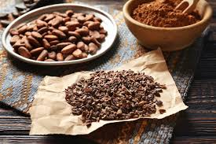
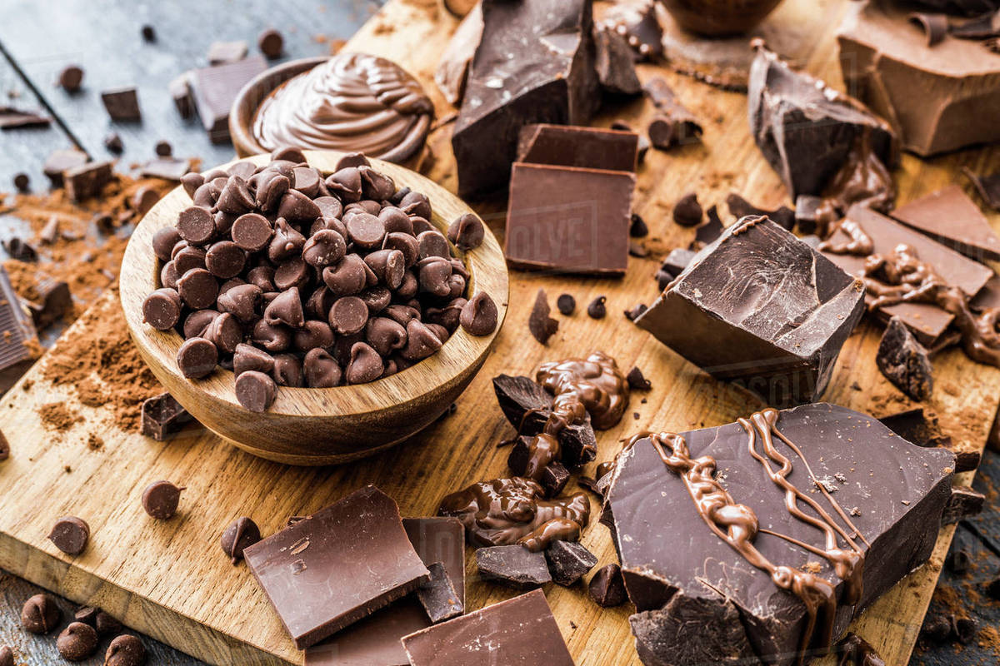
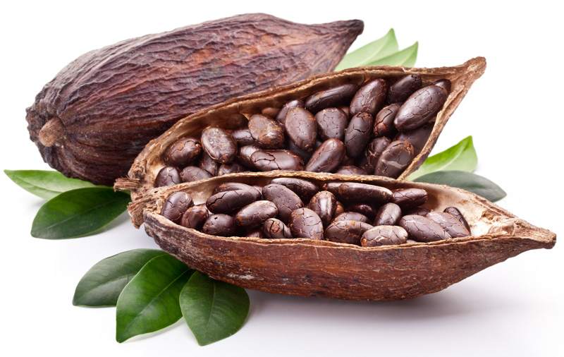
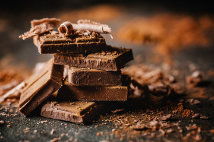

To produce 2.2lb of chocolate, 300 to 600 beans are processed. The process produces around 50% cocoa butter and 50% cocoa powder.
Relative poverty of cocoa producers means less efforts toward deforestation reduction. The cycle perpetuates as market prices generally are high or low and rarely land in the middle of the two. Agroforestry has helped to limit this but global warming is expected to have a large impact on the system.
Cocoa can improve aspects of health including, heart disease, diabetes, asthma, and more. See Health information
More facts can be found at the following links



